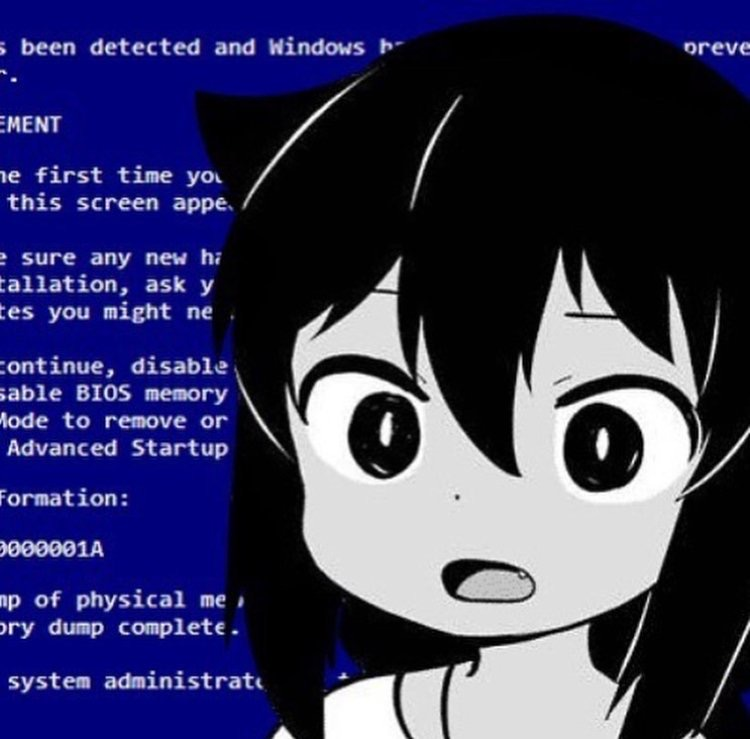

Update Tasks are a feature of MSIX that allows Windows to run a piece of code when your package is updated, without needing to launch the entire app.
This is a feature that heralds from the UWP era, where it's fairly easy to use since you're fully in WinRT land already.. But if you're packaging a regular Win32 app instead, or the newer Windows App SDK, it gets tricky.
And by tricky I mean bullshit and barely documented, just like last time!
Here's a walkthrough of how you can add an Update Task to any kind of MSIX package.
1. Create the background task class
Since this feature relies on UWP's Background Tasks, your code needs to run in a Windows Runtime component, aka a .winmd.
There are actually no differences here compared to the UWP implementation; You can just create a Windows Runtime component project in VS and host your code in it, implementing IBackgroundTask.
You can technically create a C# Class Library instead and use CsWinRT to author the component if you really need NET6 instead of the old UWP-flavored NET Framework*.
Once you've built your component, include your .winmd in your packaged files.
🛑 Make sure it has the same name as the namespace of your UpdateTask! WinRT relies on naming to associate the winmd with the classes it contains. (BackgroundTasks.winmd in this example.)
2. Declare the UpdateTask in the MSIX manifest
This is where things get confusing -- With UWP, you just need to reference your freshly-authored component in the main app and add one line to the appxmanifest:
<Application Id="YourWin32App">
[...]
<Extensions>
<Extension Category="windows.updateTask" EntryPoint="BackgroundTasks.UpdateTask">
</Extension>
</Extensions>
</Application>
But if you're packaging a Win32 app instead, said app has no knowledge of WinRT and won't be able to expose your .winmd's entrypoint on its own.
Most of the documentation** about using UpdateTasks with Win32 apps comes from 2017 back when MSIX was still being called Desktop Bridge, but basically the solution is to declare an in-process WinRT server that'll get started by Windows and run your winmd.
The Windows Runtime (WinRT) supports the concept of In Process Servers, which allows for using objects that are in a different dll/winmd with super-fast performance and easy-to-use ABI.
(https://github.com/hez2010/WinRTServer)
<Package>
<Extensions>
<Extension Category="windows.activatableClass.inProcessServer">
<InProcessServer>
<Path>Your_Inproc_Server.exe</Path>
<ActivatableClass ActivatableClassId="BackgroundTasks.UpdateTask" ThreadingModel="both" />
</InProcessServer>
</Extension>
</Extensions>
</Package>
notice how this is under Package->Extensions, not Package->Applications->Application->Extensions like the previous one
And that's it! Install an update to your MSIX and the component will run -- You don't even need to modify your Win32 app.
🥳🥳🥳
But I hear you ask, "how do I build an inprocess WinRT server"?

I don't know!
Thankfully Microsoft provides those to you, if you know where to look.
- If your
.winmdcontains managed code (compiled .NET/MSIL), you can either use CsWinRT's WinRT.Host.dll, or the built-in CLRHost.dll***.- I think
CLRHost.dllis more practical to use since it's inSystem32and just werks™️, whereas you'll have to embedWinRT.Host.dllin your package.
- I think
<InProcessServer>
<Path>[WinRT.Host.dll or CLRHost.dll]</Path>
<ActivatableClass ActivatableClassId="BackgroundTasks.UpdateTask" ThreadingModel="both"/>
</InProcessServer>
- If your
.winmdcontains native code because you passed it through NET Native? I have no fucking idea.- The logic seems to be that you need to reference the native code in your app dll and use that as the inProcServer.
- I'd recommend just not using .NET Native for the WinRT component project tbh it's going to have like 5 lines of code who cares
3. Bonus round: Escape the AppContainer sandbox in your UpdateTask
Since your UpdateTask is a WinRT component, it'll run under UWP rules/AppContainer, even if you've wrapped your MSIX package with runFullTrust.
This can be annoying if you need to run code that's not available under the Universal Windows APIs, or if you need to read/write files outside of the sandbox.
The only solution available to you is to make use of FullTrustProcessLauncher, so you can invoke your Win32 app (or any other exe) from the WinRT component.
This can look slightly schizophrenic if you're using your main app as the FullTrustProcess, since it'll look like it's registering itself:
<Applications>
<Application Id="App"
Executable="MyWin32App.exe"
EntryPoint="Windows.FullTrustApplication">
<Extensions>
<!-- Register ourselves as fullTrustProcess so it can be invoked from the updateTask component -->
<desktop:Extension Category="windows.fullTrustProcess" Executable="MyWin32App.exe">
<desktop:FullTrustProcess>
</desktop:FullTrustProcess>
</desktop:Extension>
<Extension Category="windows.updateTask" EntryPoint="BackgroundTasks.UpdateTask">
</Extension>
</Extensions>
</Application>
</Applications>
<Extensions>
<Extension Category="windows.activatableClass.inProcessServer">
<InProcessServer>
<Path>CLRHost.dll</Path>
<ActivatableClass ActivatableClassId="BackgroundTasks.UpdateTask" ThreadingModel="both" />
</InProcessServer>
</Extension>
</Extensions>
And the code in the WinRT component:
var quickLog = "Update Task log you can write wherever";
// Being able to launch the fullTrustApp directly with a command line parameter requires API contract v2 (W11/22000+ only)
// (Otherwise, the parameter needs to be in the MSIX manifest and you don't get any feedback to log here)
if (ApiInformation.IsApiContractPresent("Windows.ApplicationModel.FullTrustAppContract", 2, 0))
{
var fullTrustLaunchOperation = FullTrustProcessLauncher.LaunchFullTrustProcessForCurrentAppWithArgumentsAsync("--commandLineArgumentForYourExe");
fullTrustLaunchOperation.AsTask().Wait();
var fullTrustResult = fullTrustLaunchOperation.GetResults();
quickLog += "FullTrustLaunch result -- " + fullTrustResult.LaunchResult.ToString();
if (fullTrustResult.LaunchResult != FullTrustLaunchResult.Success)
{
quickLog += " " + fullTrustResult.ExtendedError.Message;
}
}
*
Keep in mind you can just use LangVersion to get most of C#11's benefits, even on this old CLR..
** calling it documentation is a gross euphemism as it's basically just sample code, they didn't even have packaging projects back then so they did it all in javascript and guess what? They removed UWP javascript support in VS2019+ and downloading older visual studio versions requires a microsoft account (or just grab it off chocolatey) just so I can see what this bloody sample from 2017 generates in the appxmanifest, fuck you
*** There's also UWPHost.dll/UWPShim.exe, which comes with the NETCore.UniversalWindowsPlatform package. It's mostly used for in-development UWP apps when running under debug/without NET Native. Not sure why they weren't just using CLRHost..